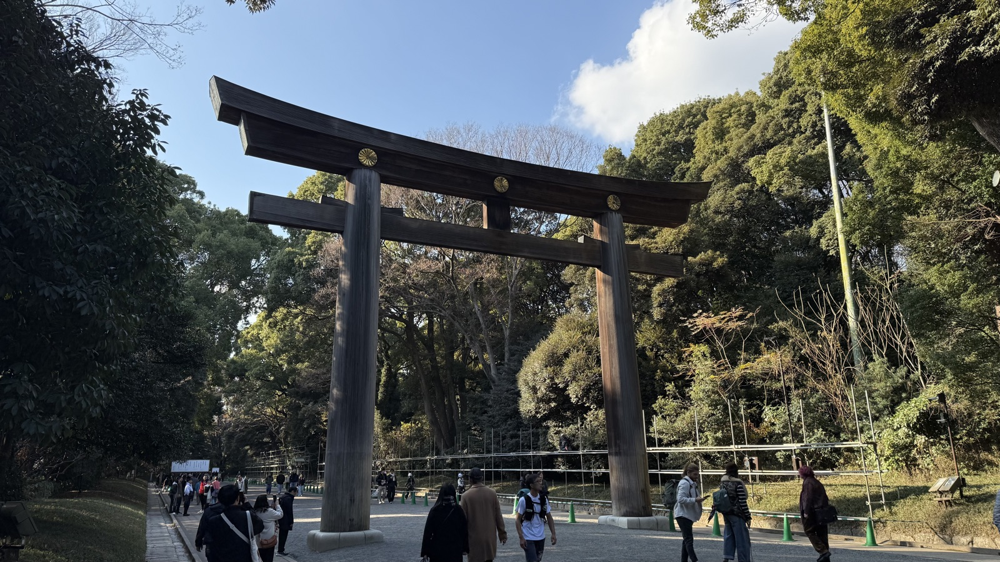
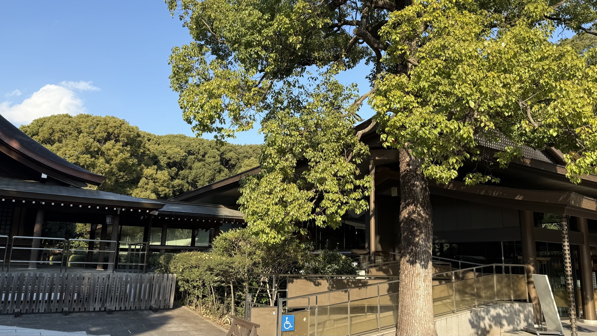
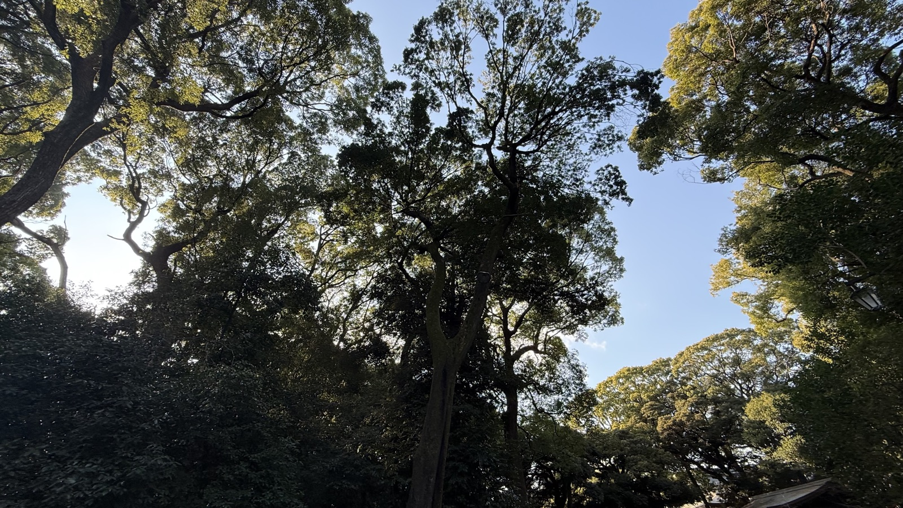
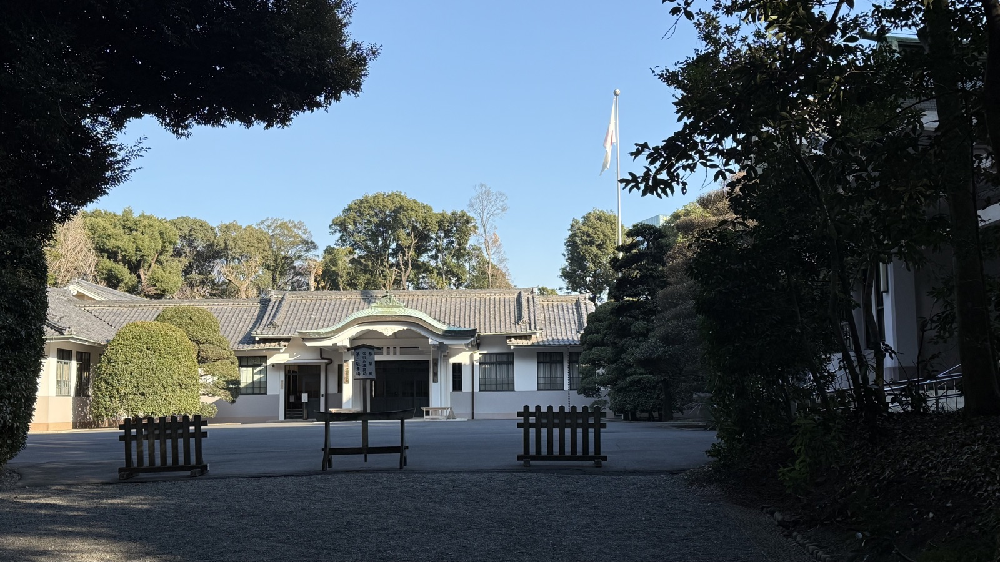

History & Founding
Founded in 1920 to enshrine Emperor Meiji and Empress Shoken, the shrine sits on land that was once little more than wasteland. Roughly 100,000 trees of 365 species, donated from across Japan, were deliberately planted here as a forest engineered to mature a century into the future.
Today it has grown so dense it is nearly indistinguishable from a natural forest, and stands as a landmark example of urban woodland known as the Yoyogi Forest.

The great torii at the entrance to the approach, built from Taiwanese cypress.

Wine casks donated from Burgundy, France, lined up on the grounds — a living reminder of Emperor Meiji's spirit of wakon-yosai, "Japanese soul, Western learning."

The great torii seen from further back along the approach — the stream of visitors passing beneath it gives a sense of its scale.
Highlights
Just steps from JR Harajuku Station, pass beneath the roughly 12-meter torii of Taiwanese cypress, and the Minami-shinmon gate and main hall appear at the end of the approach. Within the Meiji Jingu Inner Garden lies Kiyomasa's Well, known as a spot for good fortune in love.

Beyond a sweeping branch, a torii on the approach appears small in the distance.

Beyond the Minami-shinmon gate, the main hall comes into view — seen here past the Meoto Kusu camphors, across the most open plaza on the grounds.

Shrine buildings glimpsed past a great tree trunk, with an accessible ramp in the foreground and the forest rising behind.
Visiting Tips
Meiji Jingu draws the largest hatsumode crowds of any shrine in Japan each New Year. Despite sitting in the heart of the city, it is wrapped in a protective forest — one step in from the bustle of Harajuku and Shibuya, and the space turns utterly still. On weekends, visitors often catch a Shinto wedding procession crossing the grounds.
About a 1-minute walk from JR Harajuku Station or Tokyo Metro's Meiji-jingumae ⟨Harajuku⟩ Station. The approach to the main hall takes roughly 10 minutes each way; visiting the Inner Garden (Kiyomasa's Well) requires a separate admission fee.

Meoto Kusu, two camphor trees joined by a sacred shimenawa rope — beloved as a symbol of marital bonds.

The canopy of a forest a century in the making, filtering light in a way that feels nothing like the city around it.

Looking straight up through the trees along the approach, light spilling through the gaps in the canopy.
Cultural Background
Meiji Jingu is a defining example of a modern shrine as "sacred forest within a city." Because it enshrines an emperor of the modern era, its origins differ from shrines like Ise Jingu, which honor deities from ancient myth — making it, in a sense, a jingu that embodies the Meiji era itself.

Sake casks donated by breweries from across Japan, stacked along the approach — a sight unique to Meiji Jingu.

A building believed to be the Sanshuden reception hall, its shrine banner raised on a flagpole above a neatly tended forecourt.